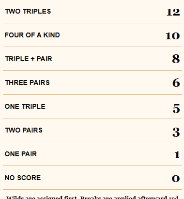
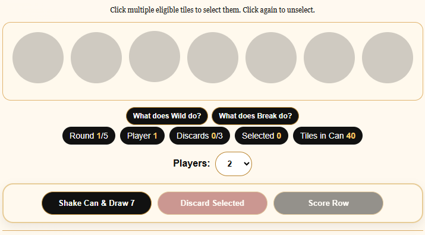
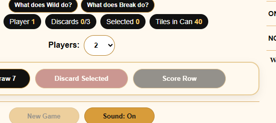

Draw seven
Shake the can and reveal a new row. Every draw creates a fresh puzzle.
A five-round game of choices, chances and strategy
Draw seven tiles, shape your row and decide when to score. The rules are simple—but every choice changes what remains possible.
No download. No account. Play instantly in your browser.
Why it works
The draw is random. What you do with it is not. Each round asks you to balance the score in front of you against the possibilities still in the can.
Shake the can and reveal a new row. Every draw creates a fresh puzzle.
Keep what helps, discard what does not and time Wilds and Breaks carefully.
Lock in your best combination, then live with what remains for the next round.
The 7FALL experience
7FALL™ captures the excitement of a lucky draw and the tension of deciding whether to hold, discard or score.
“Every tile creates new possibilities—and every choice closes some of them.”
The scoring guide stays visible while you play.
Wilds, Breaks and discards reward timing rather than memorization.
Short games make one more try an easy decision.

See it in action
The digital edition keeps the tabletop logic visible and the interface deliberately straightforward.


Designed for a broad table
7FALL™ is built to welcome casual players without taking strategy away from experienced ones.
Visible scoring and short turns help new players stay involved from the first draw.
Simple controls hide a steady stream of tradeoffs, timing choices and score-chasing decisions.
Random draws and five-round structure create a natural personal-best challenge.
Physical edition
7FALL™ has a working physical prototype, a complete browser edition and gameplay analytics already collecting real-player behavior. The project is seeking a publishing partner for development, manufacturing and distribution.
Publisher materials can include the playable digital edition, prototype overview, rules, gameplay data and designer background.
Your first draw is waiting
Try a complete five-round game and see how quickly a simple draw becomes a difficult decision.
▶ Play 7FALL™ free